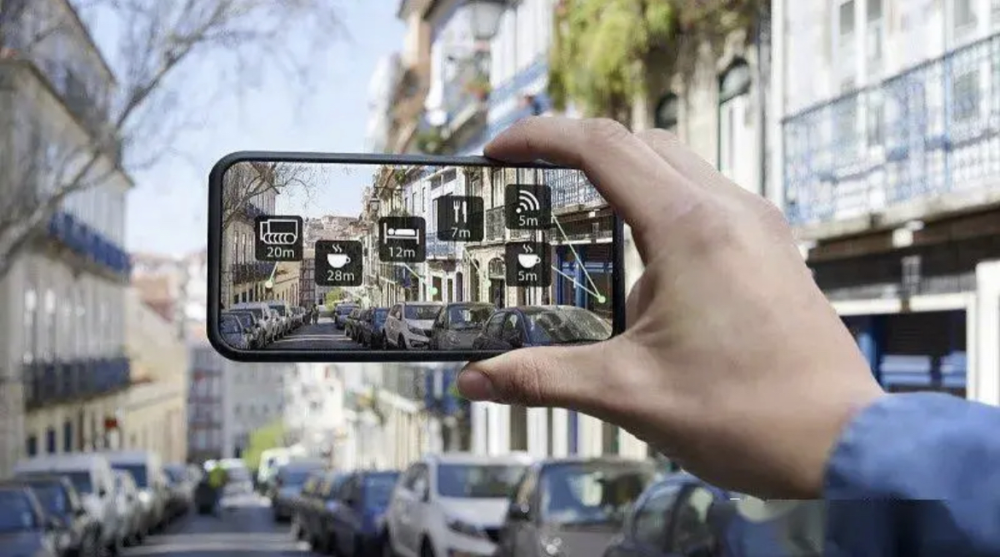

About Technology
关于技术，我们想说的
ifarm团队为了向您提供最优质最放心的服务，我们向农场引进了非常先进的技术，可以在提升沉浸式体验的同时也能让您更加舒适放心，以下是我们的介绍。

1.AR
增强现实（简称 AR技术），是一种实时地计算摄影机影像的位置及角度并加上相应图像的技术，是一种将真实世界信息和虚拟世界信息“无缝”集成的新技术，这种技术的目标是在屏幕上把虚拟世界套在现实世界并进行互动。

2.数字雕塑
数字雕塑是利用计算机进行虚拟的雕塑，它模仿现实手法对存在或不存在的物体进行雕塑。 在虚拟的世界中，数字雕塑家可以使用软件对任一个现实的或虚拟的完全基于自己想象的事物雕塑。数字雕塑的目标并不是将传统雕塑取代，不必在超越传统雕塑上走弯路，数字雕塑有其特有的使命，作为一种新的技术种类，它有着强大的功能和无限的魅力。
3.物联网
物联网指的是将无处不在的末端设备和设施，包括具备“内在智能”的传感器、移动终端、工业系统、数控系统、家庭智能设施、视频监控系统等、和“外在使能”的，如贴上RFID的各种资产、携带无线终端的个人与车辆等等“智能化物件或动物”或“智能尘埃”，通过各种无线和/或有线的长距离和/或短距离通讯网络实现互联互通、应用大集成、以及基于云计算的SaaS营运等模式，在内网、专网、和/或互联网环境下，采用适当的信息安全保障机制，提供安全可控乃至个性化的实时在线监测、定位追溯、报警联动、调度指挥、预案管理、远程控制、安全防范、远程维保、在线升级、统计报表、决策支持、领导桌面等管理和服务功能，实现对“万物”的“高效、节能、安全、环保”的“管、控、营”一体化。